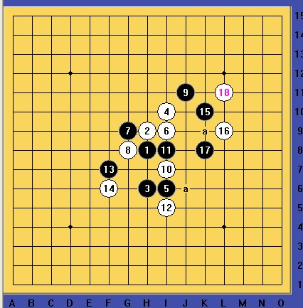

［ 小红眼镜 于 2012-4-21 16:20:50 时奖励此帖[金币加 100 威望加1］

地毯这个难度不大，十几分钟就出来了，主要是黑石出现假杀干扰思路，两个19都是可以的。
棋谱：
 1.rar
1.rar［ 空恨社小仙 于 2012-4-22 2:28:31 时花20金币送鲜花一朵］
杀的不错,虽然这并不是唯一的杀法,但也是杀掉了,值得学习!
其实杀这种局面主要就是锻炼一下排除软件干扰的能力而已,当时我拆这个变化时也被小黑大大地干扰了一下,后来还是自己目算才找到出路,我杀的虽然与2L大同小异,但还是有小小区别的,后来逆刃大师又给出一套不同的杀法,显然这样的局面虽然软件很难算出正解,但人脑却可以找出N条出路...
［此帖子已被 空恨社小仙 在 2012-4-22 3:03:21 编辑过］
［ 山城刀客 于 2012-4-22 9:56:59 时花20金币送鲜花一朵］